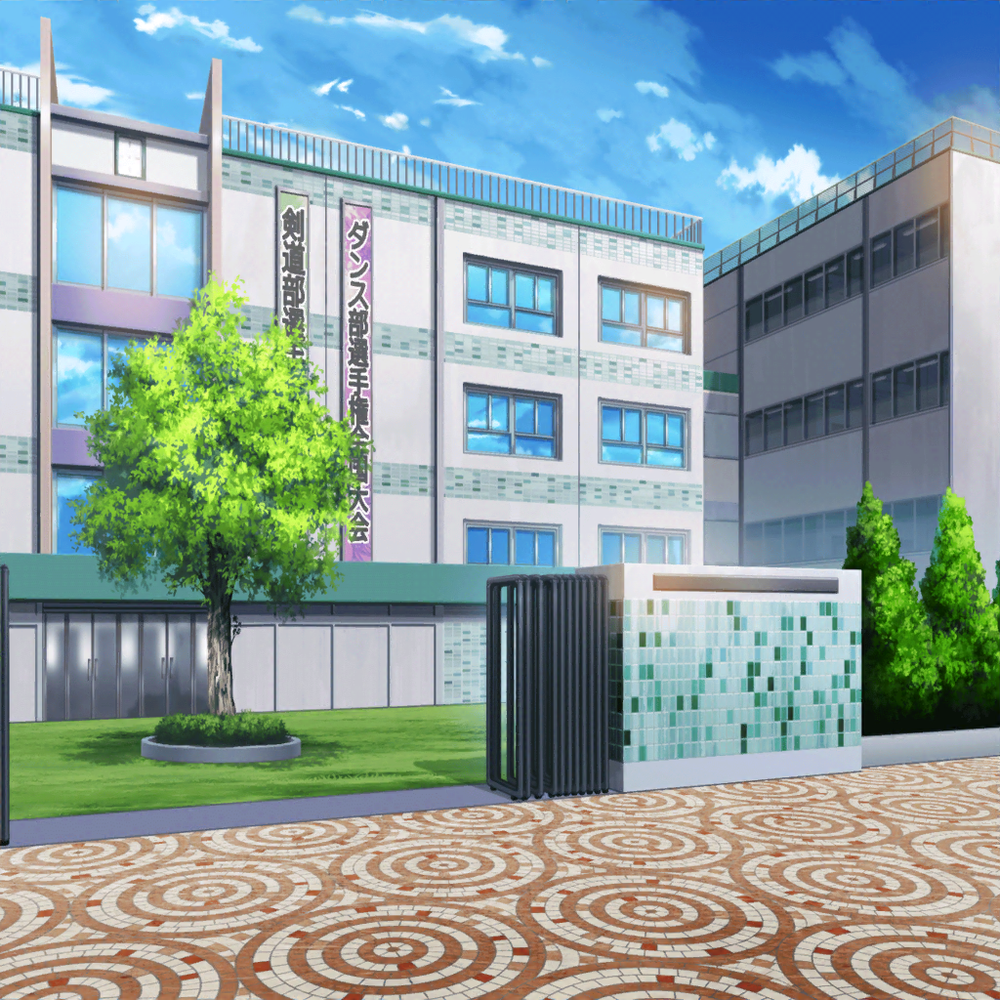
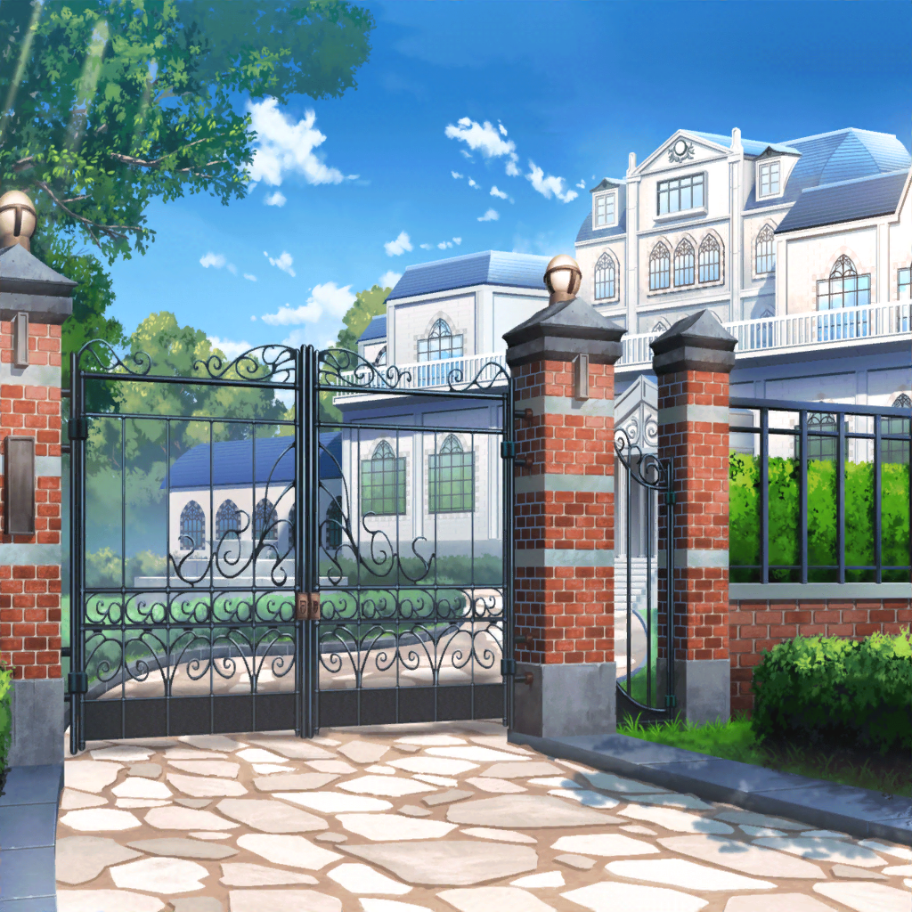

商店街
はぐみ
え。はぐみ、べースをやるの？
たしか……ギターより弦が少ないやつだよね？
はぐみ
ギターは兄ちゃんに教わったことあるから、
弦少ないしいけると思うよ。
根性根性だねっ！！
花音
げ、弦の数の問題だけじゃ……
こころ
決まりね！！
入りたいって気持ちがあれば、何も要らないわ！
薫
首尾よくメンバーが５人に揃った……
残ったポスターは、私のファンのために貰っても？
花音
ほ、本当に、すごい速さで揃えちゃった、
こころちゃん……
こころ
ふふん。それはそうよ！
あたしはいつも、楽しいことしかしてないもの！
楽しくなりたくない人なんて、いないでしょ？
花音
そ、それは……たしかに……？
ミッシェル
（いや……あたしはなりたくない……
弦巻こころと楽しくなんて、
なりたくないよ……！）

翌日
花咲川女子学園 1-C教室
美咲のクラスメイト
おはよー美咲ー。
昨日のバイトどうだった？
美咲
あ。おはよー。
う、うん……ちょっときつくて、断った
こころ
るーるるんっ♪ バンド、バンド～♪
美咲
（あのキグルミのことはもう忘れよう……
でも……）
ミッシェル
（待て待て！ メンバーじゃない！）
こころ
じゃあ、クマ枠で採用！
美咲
（現状あたしは、弦巻こころの
バンドメンバーってことに……
変なことに巻まないでって、ちゃんと断ろう）
こころ
るーるる♪ あっ！ そうだ！
～～バンドと言えばっ！
ダーッシュ！！
美咲
あの、弦巻さ……
え？ あれ、廊下にいる！？
ちょ、ちょっと待った……！

花咲川女子学園 校門前
こころ
う～～～んっ！ お日様がきれいっ！
晴れの日のここからの眺めって
最高だわーっ！
美咲
はぁ……はぁ……
階段、５段飛ばしでかけおりて、
スキップして、校門に登った……！？
花咲川教員
こらーっ、弦巻さーんっ！
そんな所に登らないーっ！
こころ
あっ。いっけない！
あたし、花音に用があるんだった！
～～えいっ！
美咲
そこからさらに…バク転して着地……
に、人間じゃ……
あっ、待っ……！！
花咲川女子学園 1-C教室
美咲
はぁ……つ、つかれた……
美咲
（一日中追いかけたのに……
さすが神出鬼没、全然つかまらない……）
花音
こ、こころちゃん……はぐみさん、
連れてきたよ……？
はぐみ
遅れてごめん！ ソフトボールの練習で。
はぐみ、キャプテンなんだっ。
～～で？ で？ ついに今からバンドするの！？
こころ
いいえ。バンドを作ったからには、
まずは作戦会議がしたいのっ
はぐみ
作戦？ でも、戦わないんでしょ？
こころ
戦わないけど、そう言った方がかっこいいでしょ？
みんなでどんな楽しいことをするか、
話し合いをするのよっ
美咲
（……！ ちょうどいい！
他のメンバーがいれば、会話が成立するかも……！）
こころ
それじゃ、ふたりともついてきて！
美咲
（極力関わらないようにしてきたけど……仕方ない。
変人弦巻こころを追いかけるなんて、今日だけだっ）

弦巻家
美咲
え……？ これ……家って言うか、
屋敷って言うか～～宮殿……？
こころ
薫！ 来たわね！
それじゃあみんな、入って入って！
メイド・執事たち
おかえりなさいませ、こころさま。
ご友人との会議用の部屋なら、奥に整えてございます
薫
こんなお城に住んでいるとは。
こころ、君は本当にお姫様だったんだね
はぐみ
すっごーーい！！
遊園地みたいだよっ！ プールもあるし、
テニスコート！ 噴水！！！！
花音
は、はわ、学校より大きい……！
謎のスーツの集団
こころさま。
ご所望のミッシェルさまですが、中の方が
アルバイトを辞退したそうで……
こころ
えっ。
ミッシェルみつからなかったの！？
花音
こ、こころちゃん……あの、
そのスーツの人たちって、一体……
こころ
あ。えっとね、よくわからないけど、
あたしができなくて困ったことをこの人たちに話すと、
次の日には、だいたいできるようになっているの
こころ
みんなも悩みごとがあったら、
話してみるといいかもしれないわ
美咲
（な、なにその、謎の集団……！
なんか……
ものすごいお金の匂いがするけど！！）
謎のスーツの集団
ですがこころさま、そこにいる彼女が、
キグルミの中の方かと……
美咲
（うわっ。物陰に隠れてたの、バレてた！）
美咲
えっと、あの、あたし……
こころ
……そうなの？
でも……困ったわね。
ミッシェルがいないんじゃ、会議にならないわ
美咲
いや、あの、だからその人たちも言ってるように、
あたし、ミッシェルだから！
ミッシェルの中の人！ わかる？
こころ
……？ ミッシェルはクマよ。
あなたは女の子だわ。
あんまり……似てないと思うけど？
はぐみ
そうだよっ。ミッシェルはもっとピンクで、
もっふもふで、いい匂いがしたよ！
薫
君はか弱い女の子なのだから、
クマだなんて、
そんな風に強がってはいけないよ……
美咲
（なに……どうしたらいいのこの集団……
そしてあたし……
いい匂いじゃないの……？）
花音
こ、こころちゃん！
ミッシェルはキグルミで、
たぶん、中にこの人が……
美咲
（……！ いた！
１人だけ、話が通じそうな子！！）
こころ
……『キグルミ……の人』……？
あなた、ミッシェルと関係がある人なの？
美咲
いや、だから関係って言うか、
あたしがミッシェル……
こころ
わかったわ。じゃあミッシェルのことは、
この『キグルミの人』に聞きましょう。
さっそく、作戦会議を始めるわよっ！